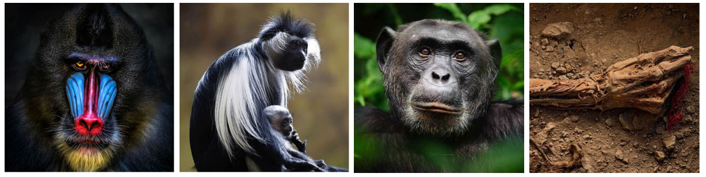

Background/Description
Deltaretroviruses (genus Deltaretrovirus) are a highly unusual genus of retroviruses (family Retroviridae) that have only been identified in a restricted subset of mammalian species. They include the primate T-cell lymphotropic viruses (PTLVs) that infect apes (including humans) and Old World monkeys, and bovine leukemia virus (BLV) which infects cattle.
Like all retroviruses, deltaretroviruses cause common, persistent infections. Infection is frequently asymptomatic, but can lead to inflammatory and malignant disease over the longer term.

Deltaretroviruses and their hosts. Left to right: (i) mandrills (ii) colobus monkeys and (iii) chimpanzees are among the many species of African primate infected with deltaretroviruses. Human populations are also infected, and have been for millennia - deltaretroviral proviruses have been recovered from mummified remains in the Andes (iv), showing that deltaretroviruses were present in human populations that reached South America.
This is Deltaretrovirus-GLUE, a GLUE project supporting comparative genomic and evolutionary analysis of deltaretroviruses. It contains a richly annotated sequence dataset for these viruses, comprised of both viral sequences and endogenous retroviruses (ERVs).
There are a wide variety of ways in which the Deltaretrovirus-GLUE resource can be used:
- To perform comparative genomic studies across the family Deltaretrovirus, e.g. as part of an investigation of deltaretrovirus diversity.
- To facilitate in-depth comparative investigations of any virus species or group within the family Deltaretrovirus.
- As a source of systematically organised information about endogenous retroviruses (ERVs) derived from deltaretroviruses.